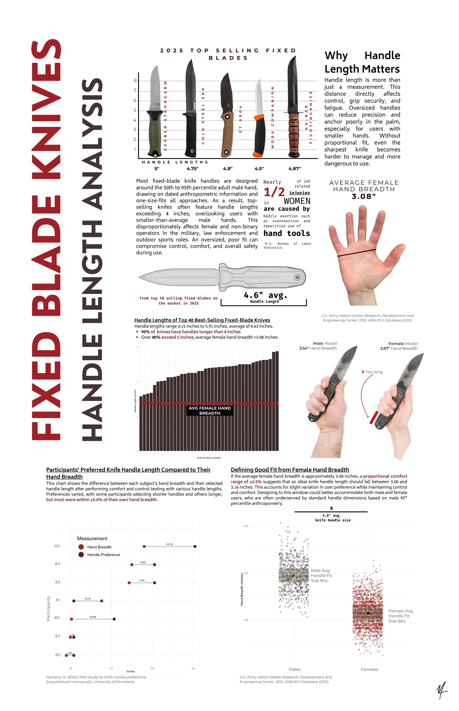
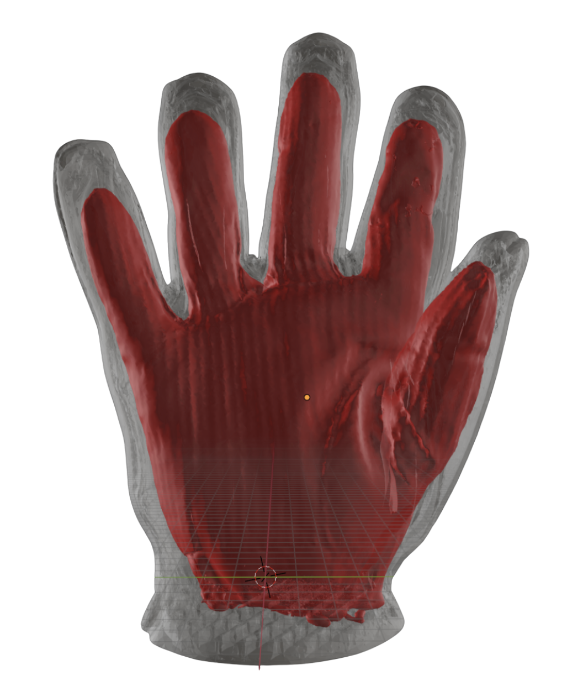

Quantifying the Dimensional Relationship Between the Interior and Exterior of Multi-layered Protective Gloves
This study provides important insight into the sources of interference that limit hand performance, with the findings being particularly significant in the fingertip region, where such issues are more pronounced compared to other areas through the analysis of dimensional differences and air gaps. The findings underscore the need to address disparities between interior and exterior glove patterns to ensure better alignment of the interior glove at the web area and closer proximity of the two layers at the fingertips. This research of the relationship between the interior and exterior layers can be extended to the relationship between the human hand and both glove layers, contributing to a deeper understanding of functional improvement in human interaction.


Exposed disconnect between NFPA sizing logic and manufactured glove dimensions
